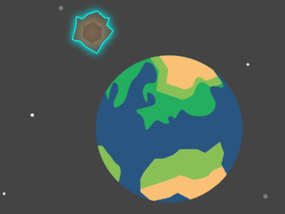
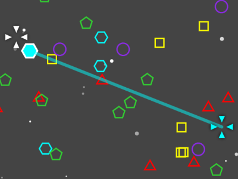
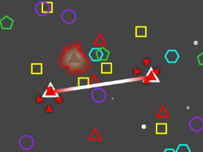
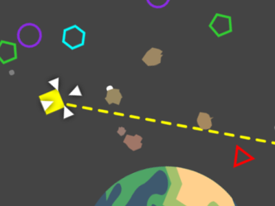

| 5 Simple Steps for Saving the World | |
|
1
Watch out for meteors!
They come in 5 types (marked by color and symbol),
and it only takes a few hits to destroy the planet.
2
Connect matching pairs of
satellites to set up defenses against meteors
of the same type. Connections can't cross
Earth.
3
Use your joystick to fly
through space. Grab satellites by
pressing and holding
either joystick button.
4
When both players are holding satellites,
press the center button
to connect them!
5
Connections are one-time-use.
They break when meteors break. So be sure to keep
making new ones!
|
    |
| Press any button to return | |